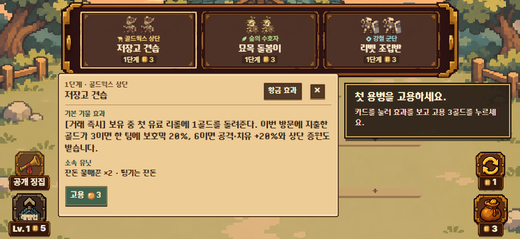
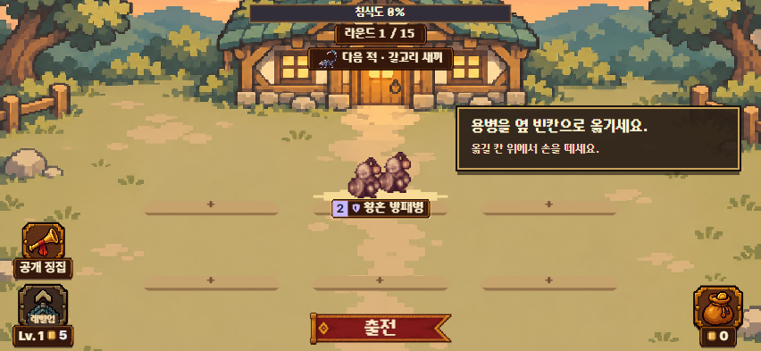
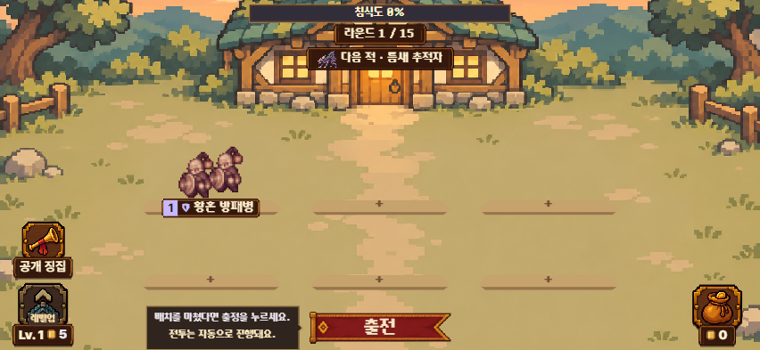
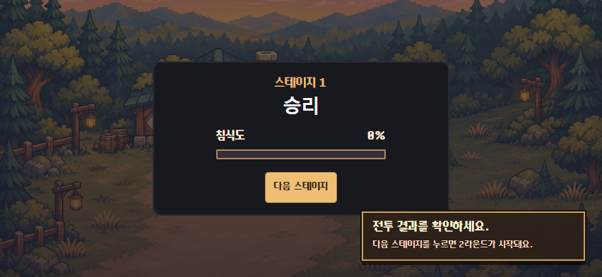
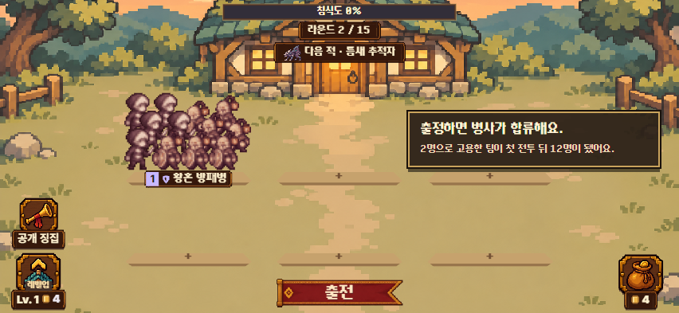
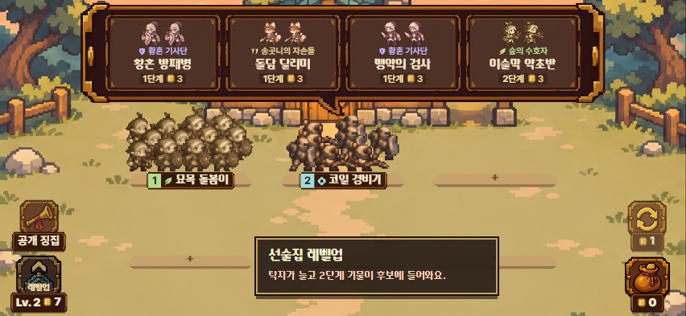

첫 원정 튜토리얼
새 분대 원정의 가로 모바일 화면(852×393)으로 만든 3라운드 시안. 이미지를 눌러 확대할 수 있다.
1라운드 · 고용에서 전투까지





2라운드 · 계열 효과와 증원


3라운드 · 골드 사용법
원하는 기물이 없을 때 리롤을, 레벨업 비용을 모았을 때 레벨업을 안내한다. 둘 다 건너뛸 수 있다.


캡처 출처와 재현
03의 출정 안내는 게임에 적용했다. 나머지 안내 상자는 시안 요소다. 04의 전투는 같은 편성을 Windows 검증판 Unity에서 재생해 촬영했다.